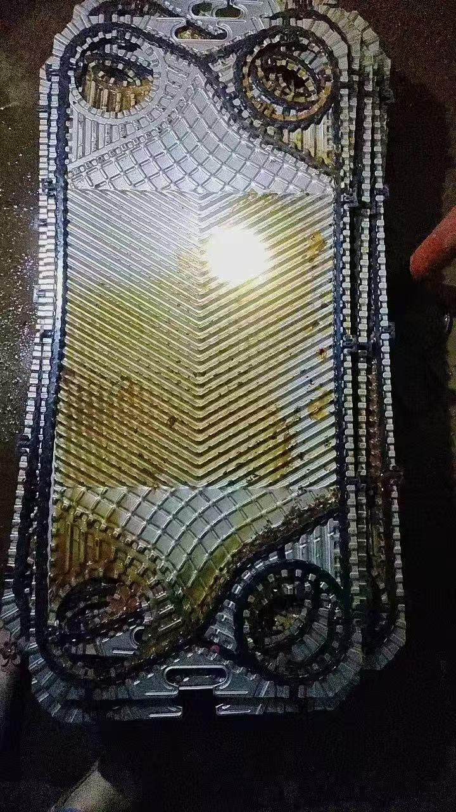
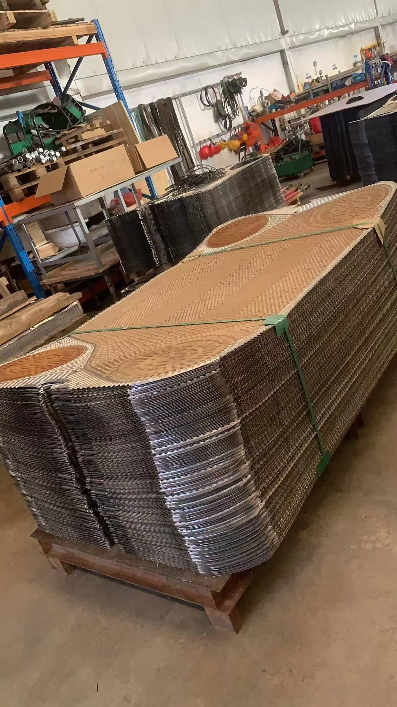

艾克森板式换热器全系列介绍：板片、胶垫及型号大全
艾克森（ACCESSEN，上海艾克森标志技术有限公司）是国内板式换热器的头部品牌，产品覆盖供热、制冷、数据中心液冷、石油化工、船舶海工、电力冶金等几乎所有换热场景。它的可拆垫片式板式换热器以系列全、板型多著称，这篇文章把艾克森的板片结构、胶垫材质和全部常用型号一次讲清楚，方便大家选型和订购配件时对照。
一、艾克森板式换热器概况
艾克森的可拆垫片式板式换热器按板波纹角度分为**L小角度（约30°）和H大角度（约60°）**两个基本板型：
- L板：小角度波纹，流道阻力小，适合对数温差大、端差一般、介质含颗粒物较多、要求低阻降的工况
- H板：大角度波纹，湍流更强、传热系数更高，适合小温差高传热要求的工况
同一框架内L板和H板可以混装，按换热需求优化组合，这是艾克森板型设计的核心优势，也是选型时要重点跟厂家确认的地方。
板片常用材质：304 / 316L不锈钢、钛（TA1/Grade 1）、钛钯合金、SMO 254、哈氏合金C-276、镍，海水、氯碱、强腐蚀介质都有对应选择。
胶垫常用材质：
| 材质 | 耐温范围 | 适用介质 |
|---|---|---|
| NBR丁腈橡胶 | -15~120°C | 水、海水、油类 |
| HNBR氢化丁腈 | -15~140°C | 高温矿物油、热水 |
| EPDM三元乙丙 | -25~170°C | 热水、蒸汽、酸碱 |
| FKM氟橡胶 | -5~180°C | 酸、碱、有机溶剂 |
二、垫片可拆式五大系列及完整型号
1. AU系列 — 通用工业型（深槽导流区）
优化导流区设计，200口径深槽结构，微小不等截面组合丰富，适合对数温差大、端差一般、介质含颗粒物较多的工况，是艾克森销量最大的工业系列。
型号清单：AU03、AU05、AU08、AU10L1、AU10L2、AU10M、AU15L1、AU15L2、AU15M、AU20、AU20M、AU25L1、AU25L2、AU35、AU45、AU50、AU58、AU70、AU98、AU150、AU190、AU350S

2. AN系列 — 大型工业冷却型
高传热板型，L/H双波纹角度，主打大型工业小温差冷却场景，是艾克森的大板旗舰系列，单板面积大、处理量大。
型号清单：AN5、AN10、AN10M、AN10L1、AN10L2、AN15L1、AN15L2、AN20、AN25L1、AN25L2、AN25L3、AN30L1、AN30L2、AN30L3、AN30L4、AN35L1、AN35L2、AN35L3、AN35L4、AN40L1、AN40L2、AN40L3、AN40L4、AN45L1、AN45L2、AN45L3、AN45L4、AN50L1

3. AS系列 — 汽水换热型
AS10为矮胖型深槽板片，适配大对数温差、小端差，主打汽水换热、蒸汽加热热水场景；AS为通用垫片板型。
型号清单：AS6、AS10、AS20、AS25、AS30、AS40、AS60
4. AC系列 — 暖通纯水型
瘦高型浅槽设计，适配对数温差小、端差大、介质洁净无杂质的工况，多用于暖通空调纯水侧换热。
型号清单：AC15、AC25、AC35、AC45、AC50、AC65、AC70、AC98、AC150、AC180、AC190、AC230
5. AP系列 — 200口径中槽通用型
L/H双波纹角度，适配常规对数温差、常规端差，通用性强，洁净和轻度杂质流体都适用。
型号清单：AP5、AP8、AP20、AP25、AP35、AP75、AP98、AP120、AP165、AP210
三、其他系列一览
| 系列 | 类型 | 适用场景 |
|---|---|---|
| AF | 自由流无触点板片 | 粘稠介质、含絮状物、易堵塞工况 |
| AM | 船舶海工专用 | 缸套水、滑油、海水冷却，可钛板，船级认证 |
| AQ / AA | AHRI认证制冷型 | 中央空调、冷水机组 |
| ASD | 双壁式板片 | 直饮水、食品医药，介质不互混 |
| ASW | 激光半焊 | 氨蒸发冷凝、石化物料，一侧焊接一侧可拆 |
| A-BLOC | 全焊接六面可拆 | 耐热冲击，高温高压 |
| AWK | 全焊接气气板式 | 烟气余热回收 |
| AWD | 全焊接板框式 | 高温高压苛刻工况 |
| AWPS | 全焊接板壳式 | 电厂、化工大型气液换热 |
四、板片与胶垫订购要点
- 报准板型号和板数：艾克森型号中的L1/L2/L3/L4代表同框架下的不同板宽（换热面积）档位，胶垫外形因此不同，订购时务必带齐完整型号（如AN30L2而不是只报AN30）
- 板片材质按介质定：纯水/冷却水用316L，海水用钛TA1，含氯离子高的工况选SMO 254或钛钯
- 胶垫按温度定：120°C以下水/油用NBR，热水蒸汽用EPDM，油温高用HNBR，腐蚀介质用FKM
- 区分粘贴式和免粘贴式：艾克森部分新板型采用卡扣免粘胶垫，更换更快，订购时说明板型年份
- 新旧胶垫不混装：整套更换，压紧后按说明书夹紧尺寸上紧
五、更换配件注意事项
- 拆机前记录夹紧尺寸：A尺寸是压紧板的基准，换垫后必须压回原尺寸，偏差过大会泄漏或压伤板片
- 板片清洗用软刷+专用清洗剂，禁用盐酸类强酸（应力腐蚀），洗后逐张检查
- 胶垫槽清理干净再粘新垫：残胶、油污都会影响粘接强度
- 压紧按对角顺序分次均匀上紧，最后对角测量A尺寸一致
- 换件后先水压试验再投运，确认无渗漏后再接入系统
六、总结
艾克森板式换热器的选型逻辑很清晰：通用工业选AU，大型冷却选AN，汽水换热选AS，暖通纯水选AC，常规200口径选AP，特殊工况再看AF/AM/ASD/全焊接系列。配件订购的关键是把型号写到L几这一位，并核对板片材质和胶垫材质。
如需艾克森AU、AN、AS、AP、AC等全系列板片和胶垫，泰州日船流体控制科技有限公司备有大量现货，报上完整型号即可快速报价发货。